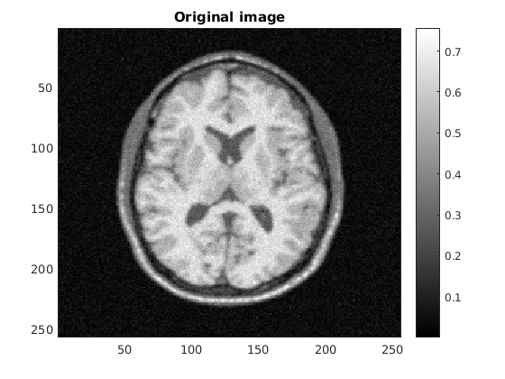
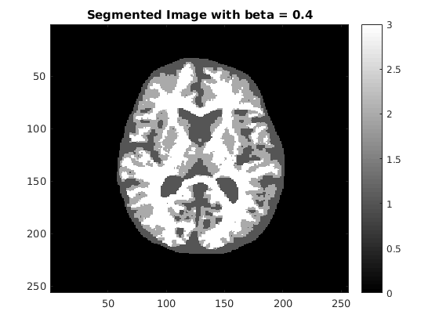
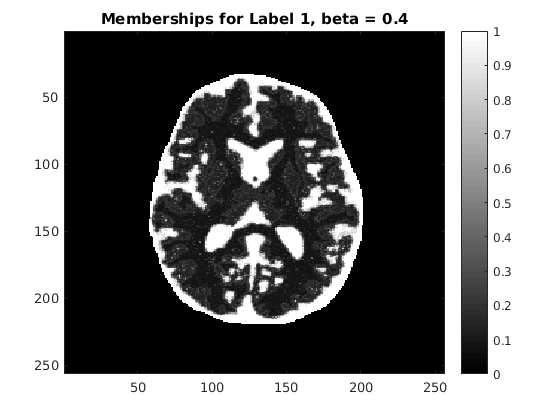
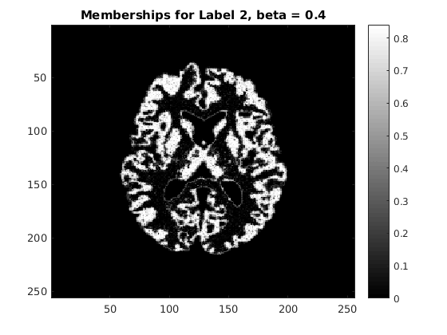
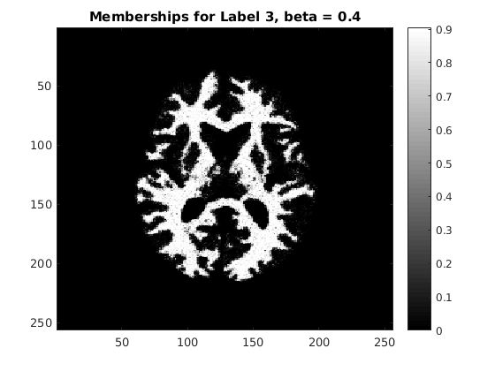
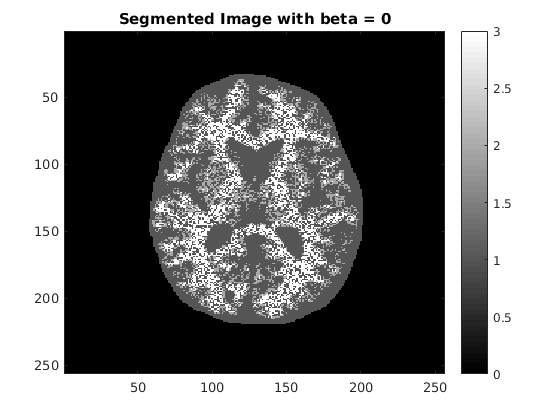
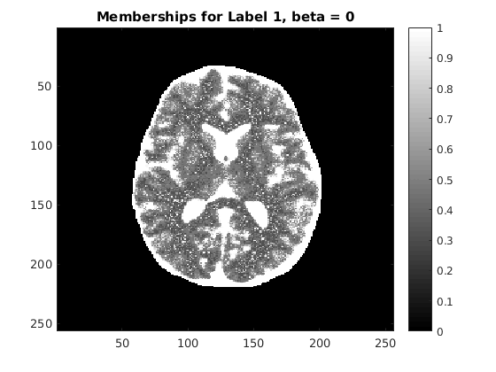
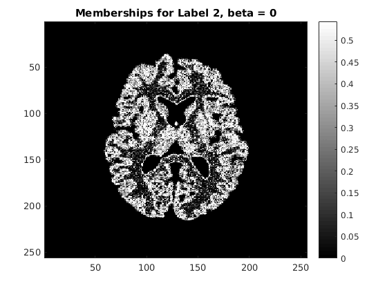
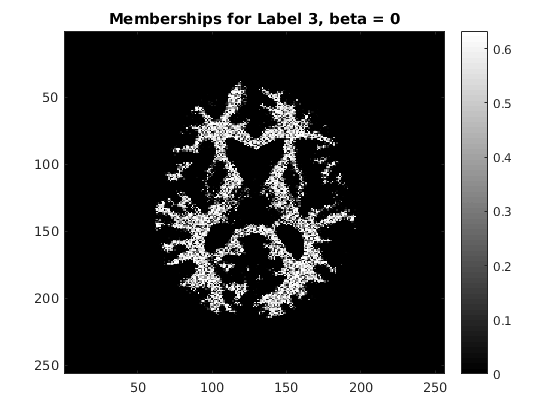

Contents
Initializing Parameters
clear clc load('../data/assignmentSegmentBrainGmmEmMrf.mat'); numClasses = 3; % Initialize labels uniformly [X,means,vars] = initLabels(imageData,imageMask,numClasses);
Labels for beta = 0.4
beta = 0.4; [X,memberships,means,vars] = EMOptimize(X,imageData,imageMask,means,vars,beta,numClasses); save('../results/optimbetaResult.mat','X'); m1 = memberships(:,:,1);save('../results/optimbetaMemberships1.mat','m1'); m2 = memberships(:,:,2);save('../results/optimbetaMemberships2.mat','m2'); m3 = memberships(:,:,3);save('../results/optimbetaMemberships3.mat','m3'); figure;imagesc(imageData);colormap 'gray';title('Original image');colorbar; figure;imagesc(X);colormap 'gray';title('Segmented Image with beta = 0.4');colorbar; figure;imagesc(memberships(:,:,1));colormap 'gray';title('Memberships for Label 1, beta = 0.4');colorbar; figure;imagesc(memberships(:,:,2));colormap 'gray';title('Memberships for Label 2, beta = 0.4');colorbar; figure;imagesc(memberships(:,:,3));colormap 'gray';title('Memberships for Label 3, beta = 0.4');colorbar; fprintf('The optimal estimates for class means are %.4f, %.4f. %.4f\n', means(1),means(2),means(3));
Iter 1: Old Prob : 9.5107, New Prob :9.5721 Iter 2: Old Prob : 9.6070, New Prob :9.6288 Iter 3: Old Prob : 9.6291, New Prob :9.6557 Iter 4: Old Prob : 9.6462, New Prob :9.6675 Iter 5: Old Prob : 9.6566, New Prob :9.6740 Iter 6: Old Prob : 9.6616, New Prob :9.6721 Iter 7: Old Prob : 9.6591, New Prob :9.6652 Iter 8: Old Prob : 9.6514, New Prob :9.6574 Iter 9: Old Prob : 9.6426, New Prob :9.6472 Iter 10: Old Prob : 9.6327, New Prob :9.6363 Iter 11: Old Prob : 9.6247, New Prob :9.6273 Iter 12: Old Prob : 9.6192, New Prob :9.6209 Iter 13: Old Prob : 9.6154, New Prob :9.6166 Iter 14: Old Prob : 9.6130, New Prob :9.6129 Iter 15: Old Prob : 9.6107, New Prob :9.6112 Iter 16: Old Prob : 9.6097, New Prob :9.6102 Iter 17: Old Prob : 9.6091, New Prob :9.6094 Iter 18: Old Prob : 9.6088, New Prob :9.6091 Iter 19: Old Prob : 9.6088, New Prob :9.6092 Iter 20: Old Prob : 9.6088, New Prob :9.6090 Iter 21: Old Prob : 9.6088, New Prob :9.6089 The optimal estimates for class means are 0.4151, 0.5396. 0.6337    
Labels for beta = 0
beta = 0; [X,memberships,means,vars] = EMOptimize(X,imageData,imageMask,means,vars,beta,numClasses); save('../results/betaZeroResult.mat','X'); m1 = memberships(:,:,1);save('../results/betaZeroMemberships1.mat','m1'); m2 = memberships(:,:,2);save('../results/betaZeroMemberships2.mat','m2'); m3 = memberships(:,:,3);save('../results/betaZeroMemberships3.mat','m3'); figure;imagesc(X);colormap 'gray';title('Segmented Image with beta = 0');colorbar; figure;imagesc(memberships(:,:,1));colormap 'gray';title('Memberships for Label 1, beta = 0');colorbar; figure;imagesc(memberships(:,:,2));colormap 'gray';title('Memberships for Label 2, beta = 0');colorbar; figure;imagesc(memberships(:,:,3));colormap 'gray';title('Memberships for Label 3, beta = 0');colorbar; fprintf('The optimal estimates for class means are %.4f, %.4f. %.4f\n', means(1),means(2),means(3));
Iter 1: Old Prob : 9.6718, New Prob :9.7239 Iter 2: Old Prob : 9.7092, New Prob :9.7256 Iter 3: Old Prob : 9.7208, New Prob :9.7242 Iter 4: Old Prob : 9.7204, New Prob :9.7213 Iter 5: Old Prob : 9.7184, New Prob :9.7189 Iter 6: Old Prob : 9.7167, New Prob :9.7170 Iter 7: Old Prob : 9.7153, New Prob :9.7155 Iter 8: Old Prob : 9.7143, New Prob :9.7145 Iter 9: Old Prob : 9.7136, New Prob :9.7137 Iter 10: Old Prob : 9.7131, New Prob :9.7132 Iter 11: Old Prob : 9.7128, New Prob :9.7129 Iter 12: Old Prob : 9.7126, New Prob :9.7127 Iter 13: Old Prob : 9.7125, New Prob :9.7126 Iter 14: Old Prob : 9.7125, New Prob :9.7126 Iter 15: Old Prob : 9.7126, New Prob :9.7127 Iter 16: Old Prob : 9.7128, New Prob :9.7129 Iter 17: Old Prob : 9.7131, New Prob :9.7132 Iter 18: Old Prob : 9.7134, New Prob :9.7135 Iter 19: Old Prob : 9.7137, New Prob :9.7138 Iter 20: Old Prob : 9.7141, New Prob :9.7142 Iter 21: Old Prob : 9.7146, New Prob :9.7146 The optimal estimates for class means are 0.4771, 0.5614. 0.6457   
Answers:
(a)The optimal value of beta is 0.4 (b) To initialize the label image: We divided the intensity range into k classes. The pixels which belong to each class have been assigned that class. This is a reasonable initialization because it is expected that different segments in the brain will fall in different intensity ranges. (c) We initialized the means and variances for each class to be the sample mean and sample variance for each class given the initialized the label image. The motivation for this is that this corresponds to the MAP estimate of the means and variance.